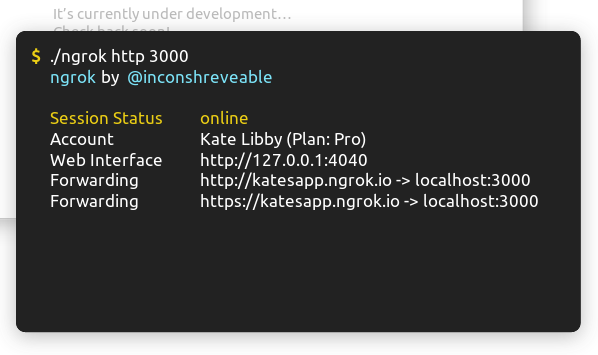

Иногда возникает необходимость временно вывесить в интернет разработку, ведущуюся на локалхосте. Например, это может быть необходимым при демонстрации разрабатываемого сайта или платформы. Сервис proxylocal.com позволяет пробросить порт локального HTTP-сервера (веб-сервера) в интернет.
Установка
На любой Linux-системе с установленными пакетами ruby и rubygems, можно открыть терминал и написать следующую команду;
$ gem install proxylocal
Запуск
Пакет будет установлен в каталог /var/lib/gems/1.8/bin. Если серис, который нужно открыть в интернет, работает на 3000-м порту, proxylocal нужно запустить так:
$ /var/lib/gems/1.8/bin/proxylocal 3000
Local server on port 3000 is now publicly available via:
http://fp9k.t.proxylocal.com/
В результате программа выведет публичный интернетовый URL-адрес, по которому будет доступен проброшенный сервис. Адрес будет содержать случайные символы, поэтому разрабатываемый сайт/сервис должен уметь работать с динамичеки заданным адресом хоста.
Вместо случайных символов можно задать префикс адреса, тогда сгенерированный URL будет более человекочитаемым:
$ proxylocal 3000 --host testhost
Local server on port 3000 is now publicly available via:
http://testhost.t.proxylocal.com/
Настройка
При настройке можно столкнуться с таким вопросом: как с помощью proxylocal расшаривать виртуальные хосты?
Пример. Стоит локально апач на 80-м порту. У него, например, три виртуальных хоста — test.ru, mysite.org, bestproject.net. Как расшарить конкретно bestproject.net?
Ответ
Сервис проксирует http-запрос в том виде в котором он приходит на него, не изменяя никаких http-заголовков. Поэтому в случае использования Apache необходимо, чтобы хост был прописан как ServerName или как ServerAlias.
Поэтому это можно сделать, например, таким способом:
— запустить proxylocal 80 --host mybestproject
— прописать для хоста bestproject.net в конфиге апача ServerAlias mybestproject.t.proxylocal.com
— перезапустить апач
Где взять исходный код, если его нет в репозитариях?
Исходники доступны на странице проекта: https://github.com/proxylocal/proxylocal-gem.
Внимание! По информации на 2018 год, сервис переехал на сайт https://ngrok.com:

|
Знаете ли вы, что: В Молдове тоже есть IT! Создание сайтов в Молдове - это очень выгодное дело. Там можно найти специалистов высокого уровня по веб-дизайну и дизайну интерфейсов, разработчиков фирменного стиля, специалистов в области полиграфического дизайна. И даже можно заказать комплексное SEO и SMM продвижение бренда. |